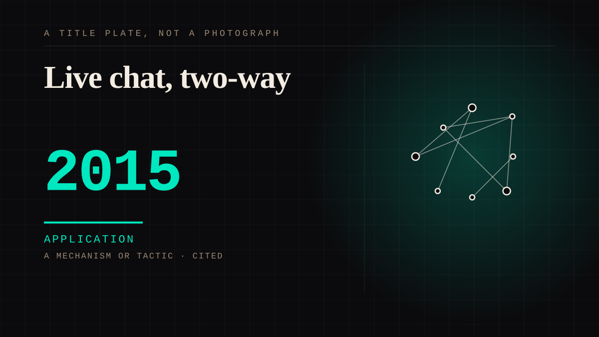

A mechanism or tactic · 2015 · Internet
Live chat, two-way
A live stream with a visible comment feed, where the creator can read the room while the room watches itself. The first mass parasocial environment where the one-sided bond visibly, continuously, acknowledges you.

It solved a problem nobody had been able to solve: making the one-sided bond feel reciprocal without the labour of a real relationship. A creator glancing at your comment costs them nothing and lands like recognition. It is also the exact mechanism monetised two years later by the gifting economy.
Application. One-sided attachment put to work on purpose. Creator economies, community, fandom as infrastructure, and the things that genuinely help people. Not automatically good - a tool with an obvious use is a tool that will also get a bad one.
Manipulation. One-sided attachment engineered for somebody else's benefit. Paid intimacy, parasocial persuasion, sasaeng, grief extraction, the streak. The lane that pays the bills and the lane that causes the most harm, frequently at the same time.
Where it sits
2010 2010+ · 2015 2026
Provenance · 5 source record(s)
- retrievableTHE SITE'S THESIS, PUBLISHED: live streaming moves the parasocial relationship from one-sided to 'one-and-a-half sided', characterised by the potential for reciprocal communication, community affiliation and presence. Peer-reviewed, in a journalThe one-and-a-half sided parasocial relationship. Current Opinion in Psychology. ↗
- retrievableThe bond persists through non-reciprocity: users keep following favourites despite failing to get a response - which is the whole subject, measuredCrawford et al. (2020), cited in The one-and-a-half sided parasocial relationship. ↗
- unverifiedMerely WITNESSING the figure interact with other community members reinforces the viewer's connection - the bond forms on other people's exchanges, not on your ownStever & Lawson (2013), cited in The one-and-a-half sided parasocial relationship.
- retrievableMeasured in the chat itself: streamer-targeted messages carry greater verbal immediacy than viewer-targeted ones (M=-1.13 vs M=-2.06, t(4763)=-49.74, p<.001, d=.72), with 'we' for 'you' as the marker. Viewers address the streamer as a peerParasocial cues: The ubiquity of parasocial relationships on Twitch (2021). ↗
- unverifiedSurvey evidence: every interaction feature tested correlated significantly with parasocial scores, chat strongest (r(116)=.611), follow weakest (r=.194). Higher loneliness and longer relationships predicted stronger PSRsCorrelations between Twitch's interaction features and parasocial relationships and streamer influence (Regelbrugge, 2024).
Connected · 3 out, 3 in
Reported as a story
It sits in